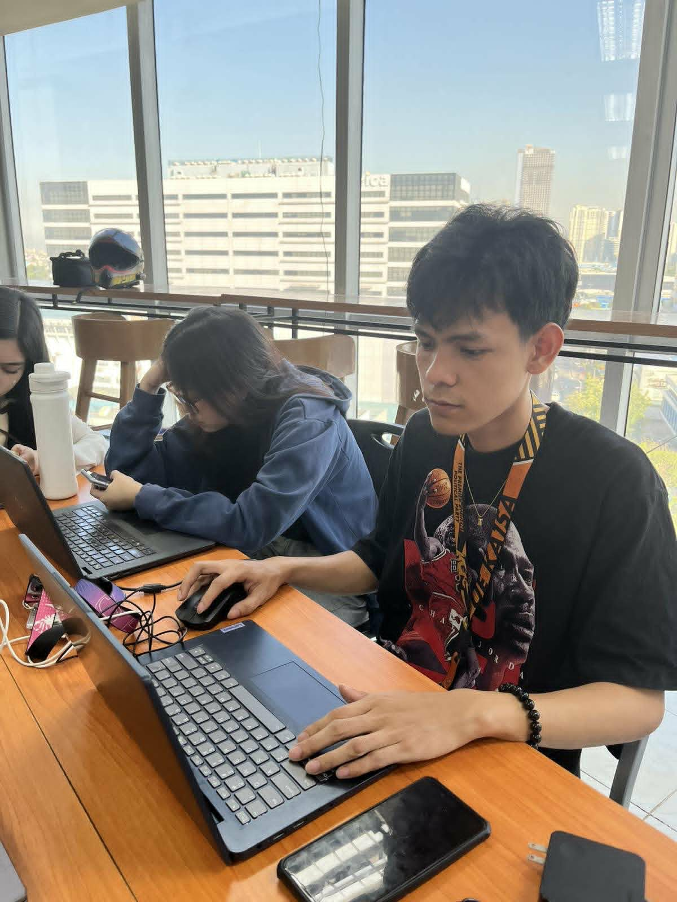
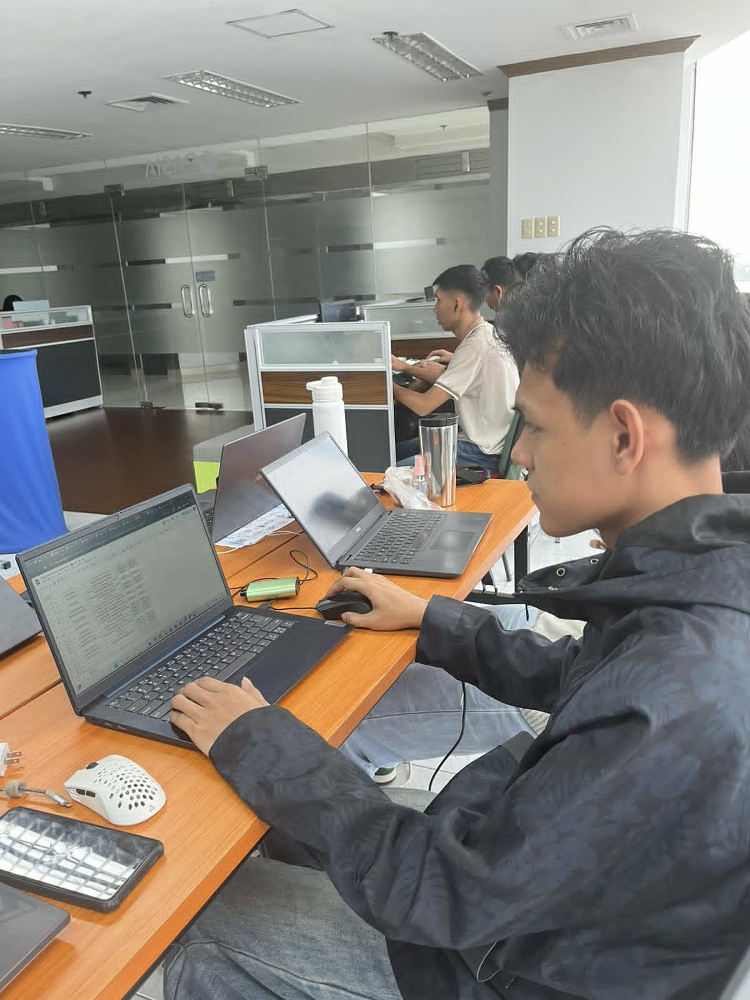
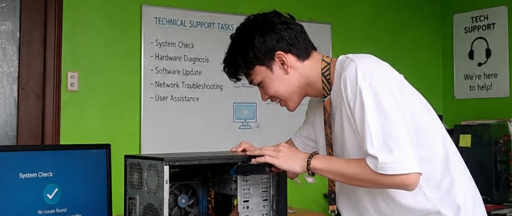
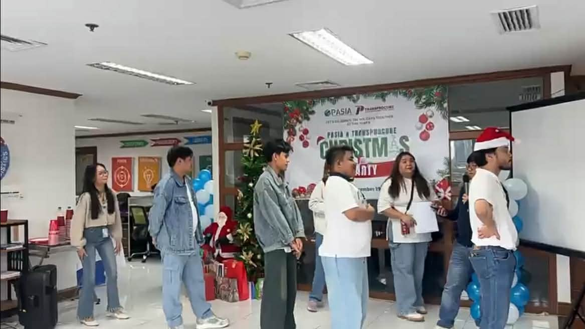
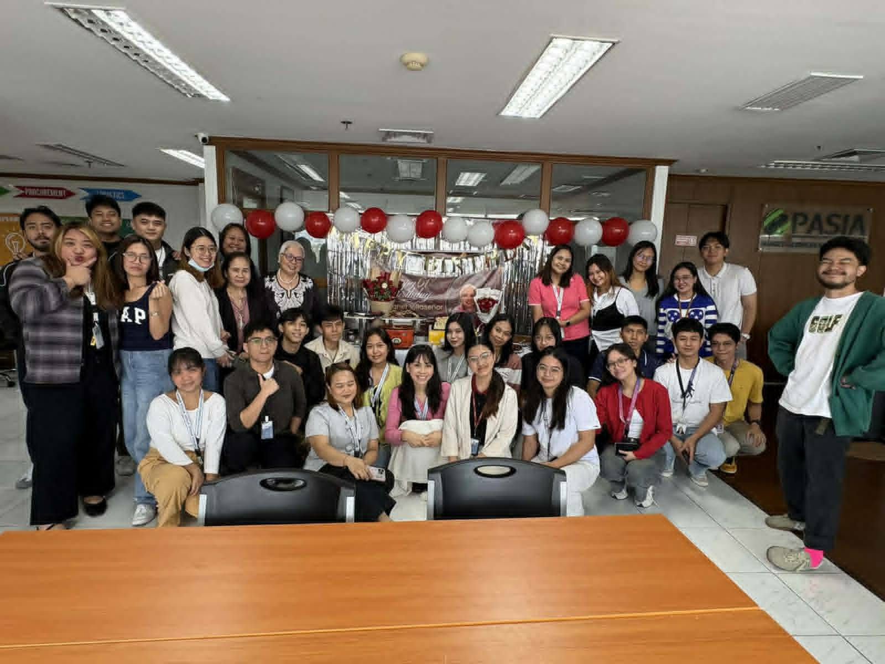
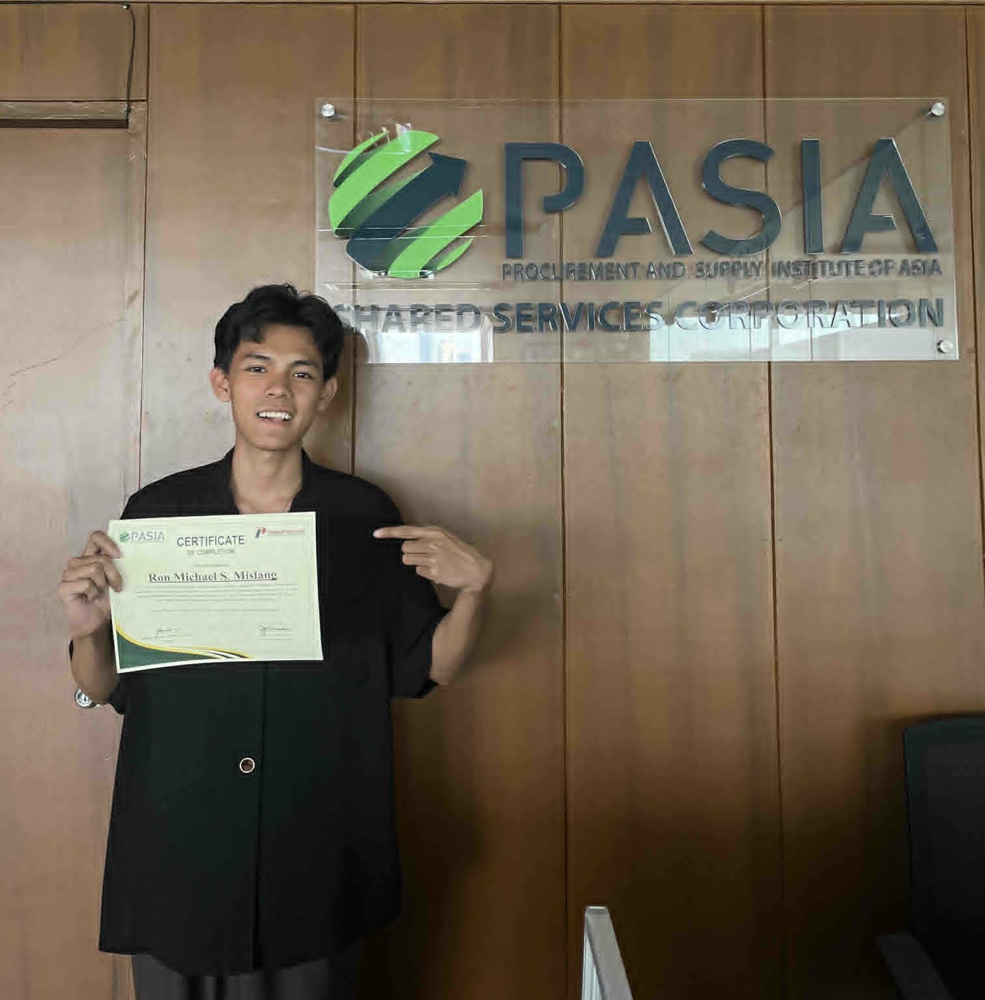

e-Barangay Management System
a digital platform designed to automate and streamline operations for local government units in the Philippines.
View case studyIT Support · Technical Solutions · Web & Digital Design
I’m Ron Michael Mislang, a recent BSIT graduate from the University of the East with a practical, well-rounded foundation across IT support, web technologies, and digital design. My core strength is hands-on technical support — hardware and software troubleshooting, installation and configuration, Windows and peripheral support, and basic networking — supported by working knowledge of WordPress, UI/UX, and digital production tools that let me contribute across support, web, and creative workflows.

Recent IT graduate and technical support specialist with practical web design experience.
A BSIT graduate with internship experience spanning technical support, website content management, service technology, and digital design.
Recent Bachelor of Science in Information Technology graduate with internship experience in technical support, website content management, graphic design, and WordPress administration. Proficient in technical documentation, basic backend development, system troubleshooting, and AI-assisted productivity tools that help streamline day-to-day workflows. Eager to contribute to an entry-level IT role while applying both technical and creative problem-solving skills.
During my internship at the Procurement and Supply Institute of Asia (PASIA), I supported conference technology operations, provided technical support during events, maintained WordPress website content, and produced 30+ digital marketing materials while maintaining visual consistency and branding.
My coursework strengthened my foundation in PHP, MySQL, networking, system testing, debugging, UI/UX, and technical documentation. I approach technical problems with a structured, collaborative mindset and use AI-assisted tools to work more efficiently — not to replace hands-on technical work.
Hardware, software, installation, configuration, Windows, peripherals, basic networking, html&css and troubleshooting
WordPress, web content, PHP/MySQL, Figma, Photoshop, Canva, Blender, UI/UX, and digital graphics
A balanced entry-level skillset centered on technical support, with additional web, UI/UX, and digital production capabilities.
Practical support skills for common hardware, software, Windows, peripheral, networking, testing, and documentation needs.
Website content management and foundational web/backend development skills that complement my IT support base.
Interface design and digital production tools used to support branding, marketing, and prototyping work.
Working habits that keep technical and creative output organized, documented, and collaborative.
My internship combined technical education with creative production across IT support, website content, and time-sensitive events.
A combined role covering technical support, event technology, WordPress content management, and graphic design.






A capstone system, a freelance Figma prototype, and a 3D modeling exercise showing technical implementation, testing, UI/UX, and digital problem-solving.
a digital platform designed to automate and streamline operations for local government units in the Philippines.
View case studyA mobile or web tool that lets you order food, groceries, or packages from your phone.
View case studyA 3D dining set table scene created in Blender, demonstrating foundational 3D modeling, scene composition, and object placement.
View case studyFormal IT education, industry certifications, and supporting project documentation.
University of the East — Manila, Philippines
July 2022 — June 2026Certification
View CertificateCertification
View CertificateCareer development training
View CertificateHotel Reservation & Billing System
View CertificateA collection of promotional materials, event designs, and infographics created during my internship at PASIA for conferences, summits, and corporate communications.
Professional designs including event promotions, summit materials, training course flyers, and infographics.
I’m open to entry-level opportunities in technical support, web and content management, networking, documentation, or digital operations.
{kind=link}